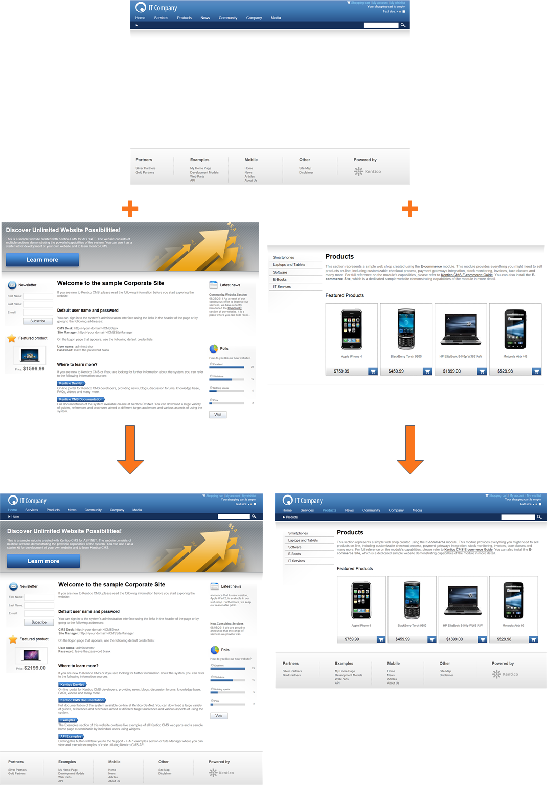
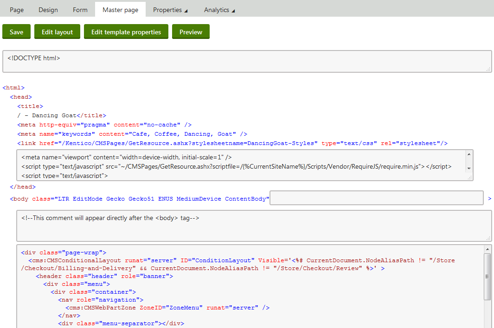

Creating portal engine master pages
Master pages allow you to share content across all pages on the website without having to add it separately to every page template. By using master pages, you can manage repeated elements, such as the site logo, main navigation menu, and footer content in a single location.
The following figure shows two pages that are nested inside the same master page. The system combines the content of individual pages and the master page, and displays the result as a single page.

Master page concept
Websites can have multiple master pages:
The root page of the content tree is always a master page.
You can create additional master pages within the structure of your website by assigning master page templates to pages.
To designate a page template as a master page, enable the Master page option on the General tab of the page template editing interface.
Important
Master pages do not automatically ensure content inheritance. They are only a tool that helps organize your website and can make it easier to set up page nesting. Portal engine pages can inherit content even without master pages.
See Inheriting portal engine page content to learn how to implement the actual inheritance.
Editing master pages
You can edit the web parts and page layout of master pages on the Design tab, like with any other pages.
Page placeholder requirement
Master pages must always contain the Page placeholder web part. The page placeholder specifies where child pages are nested inside the master page.
Adjusting the HTML output of master pages
All master pages have the Master page tab available in the Pages application. Here you can define sections of the master page's HTML code. The system also adds the code to all pages that are nested within the master page.
DOCTYPE – insert any code that you need to place at the beginning of the page's HTML source, typically the page's DOCTYPE definition.
HEAD – allows you to add HTML code inside the <head> element of the master page and all nested descendant pages.
BODY – you can specify custom HTML code in two fields:
The first field allows you to add custom attributes to the page's <body> element.
The second field allows you to add custom code that will be placed directly after the opening <body> tag. This can be useful, for example, when you need to enable Google Tag Manager on your site.
Master page layout – the area between the <body> tags displays the layout code of the master page template. To modify the layout code, click Edit layout in the tab header.

Editing the HTML code of a master page
Note: The code on the master page tab outside of the editable sections is only informative and may not be identical to the actual code rendered for pages.